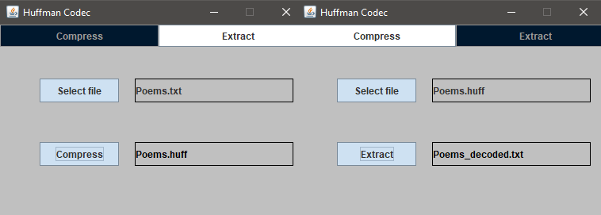
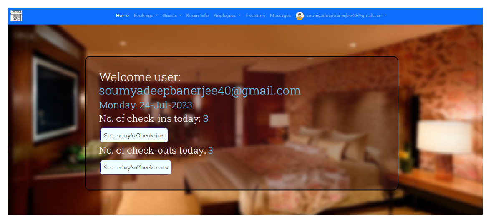

Microloom: A Social Media Web Application
Tech Used: ASP.NET 4.8, C#, HTML, CSS, JavaScript, Bootstrap, MS SQL Server
- Implemented authentication and authorization via cookies; used OTP verification for password resets.
- Implemented a follow-and-followers system, enabling users to follow others and be followed for enhanced social interaction.
- Enabled post creation, reactions (likes and dislikes), sharing, and commenting.
- Integrated real-time messaging with SignalR and built a notification system for user interactions.
- Designed a profile system allowing users to edit their profiles, upload or remove profile pictures, and view interaction history.

Image & Audio Steganography Tool
Tech Used: Java (Core), Swing Framework
- Built a Java GUI app for LSB steganography to hide encrypted text in PNG and WAV files.
- Used Caesar cipher with a user-defined shift value; embedded cipher key within hidden data.
- Applied OOP principles and handled RGB pixel manipulation and WAV sample encoding with Least Significant Bit of Least Significant Byte, supporting Little Endian format.
- Implemented custom decoding logic for accurate extraction and decryption from image and audio files.

Huffman Encoder & Decoder
Tech Used: Java (Core), Swing Framework
- Developed a Java-based file compression and decompression tool using Huffman encoding and a frequency-sorted Huffman tree.
- Implemented custom Huffman tree construction based on byte frequency and lexicographic ordering for deterministic output.
- Created a
.hufffile format that stores compressed binary data along with metadata like original extension and frequency table. - Designed a bit-level encoding system with custom stream handling for accurate data representation.
- Ensured lossless restoration during decompression by preserving structural and frequency integrity.
- Built an intuitive GUI with Java Swing to support seamless file selection, compression, and decompression.

Hotel Management System & Hotel Booking Website
Tech Used: ASP.NET 4.8, C#, HTML, CSS, JavaScript, Bootstrap, MS SQL Server
- The application offers modules for room booking, cancellations, check-in/out, guest and employee management, inventory tracking, and an admin dashboard.
- OTP-based authentication is used during password recovery; an OTP is sent to the user's email, ensuring secure identity verification before reset.
- Registration is supported for both hotel staff and website users, with options like “Remember Me” for ease of login and user session persistence via cookies.
- The system supports both employee and customer portals, ensuring streamlined interactions from both ends with intuitive UI layouts and guided navigation.
- It provides real-time data on room availability and guest status, allowing efficient room allocation and operational decision-making.
- Features like form auto-fill for returning guests, validation controls, and a step-by-step booking flow enhance usability and minimize input errors.